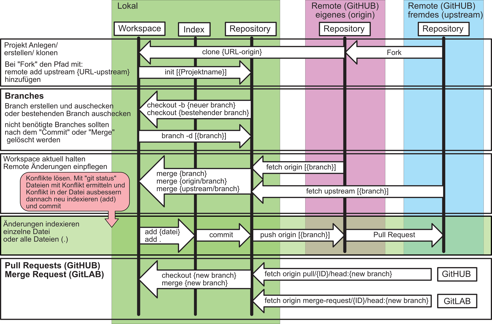

Git und GitHUB
Übersicht

Projekt Fork erstellen
Git Clone
$ git clone https://github.com/{USERNAME}/{PROJECT}
in Projekt-Ordner wechseln
Upstream Setzen
Entwicklungs-Branch erstellen
- Erzeuge einen Branch vom aktuellen Branch (main)
- Ändere den Branch zu dem neuen Branch
Update den Branch regelmäßig
Es sollte regelmäßig der letzte Stand des Projektes in den eigenen Branch integriert werden, um mögliche Merge-Konflikte frühzeitig zu Erkennen und Auszubessern.
Sichere Methode
Unsichere Methoden - Merge wird direkt ausgeführt.
Dafür ist dann der Index linearer.
oder
bei Konflikten:
Auflisten von Konflikten
Fehler beheben
und danach wieder in den Index(stage)
neuer Commit (bei sicherer Methode)
und "rebase" fortsetzen (bei unsicherer Methode)
Änderungen auf den Server pushen
Pull Request erzeugen
auf der GitHUB Page
Änderungen NACH Pull Request
Wenn der Pull Request nicht angenommen wird oder noch Fehler im Pull Request ausgebessert werden müssen.
und dann commit erstellen
Änderungen auf dem Server aktualisieren
Pull Request lokal abrufen
Für den Projekt Besitzer des Originalen Projektes. Um den Pull-Request zu Prüfen oder lokal zu Mergen.
ID Ermitteln, ist die Nummer nach den Titel des Pull Requests
(Titel #12345)
Neuer Branch kann wie ein normaler Branch verwendet werden